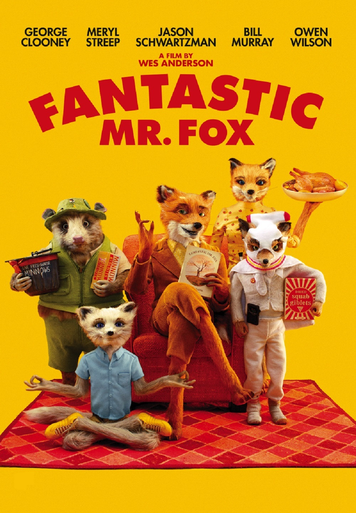
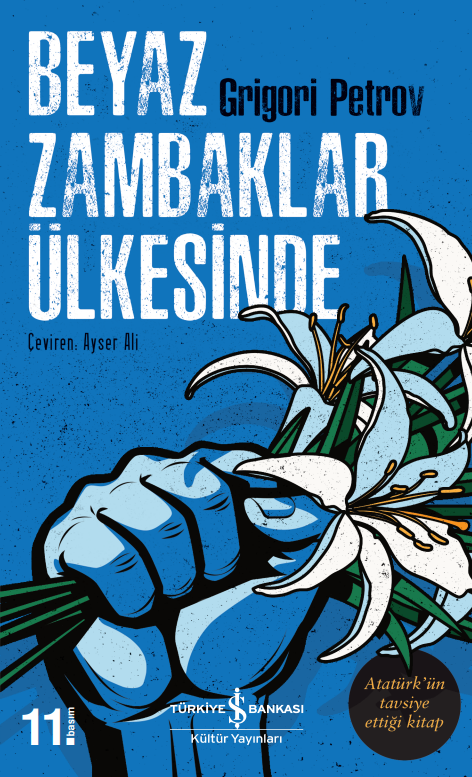

-
The Grand Budapest Hotel

-
Fantastic Mr.Fox
 -
Django Unchained
En Seviğim Filmler
-
Braking Bad

-
Game of Thrones

-
The Mandalorian

En Sevdiğim Diziler
-
Beyaz Zambaklar Ülkesinde
 -
1984

-
Kürk Mantolu Madonna